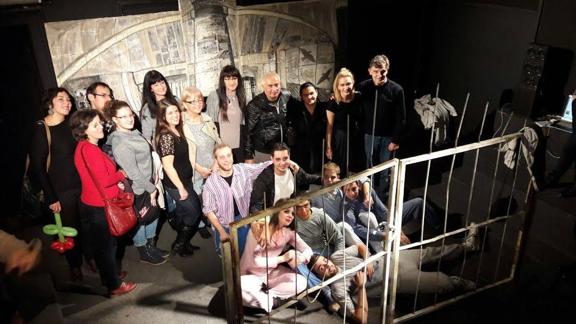

Академско позориште СКЦ-а окупља младе глумце и позоришну публику око занимљивих алтернативних позоришних пројеката. Представе Академског позоришта играју се на Камерној сцени СКЦ-а која се налази у згради Универзитета, у Шуматовачкој улици. Оно што чини јединственост овог простора јесте близина гледалаца са глумцима, која даје посебан доживљај сваком уметничком остварењу и ствара утисак као да сте и сами готово на сцени. Камерна сцена прима 50 гледалаца који у представама могу уживати сваког четвртка од 21 сат.
Кроз позориште данас пролази велики број чланова а током година смењују се генерације младих и искусних глумаца, аматера и професионалаца. Многи су после својих академских почетака каријере успешно наставили у Луткарском и Народном позоришту у Нишу и на другим позоришним сценама у Србији. Академско позориште препознатљиво је по свом репертоару а нове и старе представе као и глумци кроз своје улоге, стално доносе награде и признања на фестивалима у земљи и иностранству. Уметнички руководилац позоришта је Милош Цветковић.
Историјат позоришта
Као град на раскрсници путева за исток и запад, Ниш је лако освајан најразличитијим културним трендовима, тако да ни 60-тих година нимало није заостајао за осталим светским градовима. Млади уметници су се окупили око тада водећег студентског часописа „Младост", који је доносио новости о актуелној музичкој, филмској и позоришној уметности, што је било пресудно за оснивање камерне сцене „М" 1964. године, претече данашњег Академског позоришта.
На камерној сцени се могло видети све оно што тада није никако могло да буде играно на сцени Народног позоришта. Били су то савремени комади који су камерну сцену испрофилисали као алтернативно позориште, што је оно остало до данас. Захваљујући квалитету који су нудила, друштва хора, фолклора и позоришта спајају се у једнинствено Академско културно уметничко друштво и 1976. почињу да функционишу као АКУД „Вељко Влаховић". Тад наступа златно доба позоришта, које учествује на фестивалима у земљи и иностранству и односи многобројне награде представама „Бајка о Де Саду", „Сан летње ноћи", „Шок препознавања", "Маслачак и ретард", "Породичне приче", "Лилика", "Нада из ормара", "У пламену страсти" итд.
Званичним оснивањем СКЦ-а 1991.године. име позоришта мења се у Академско позориште СКЦ-а. Из Академског позоришта потекли су многи добри глумци, као што су Танасије Узуновић, Младен Недељковић, Кокан Младеновић и други. Та традиција се наставља, тако да сваке године по неколико полазника школе глуме Академског позоришта уписује Факултет драмских уметности у Београду.